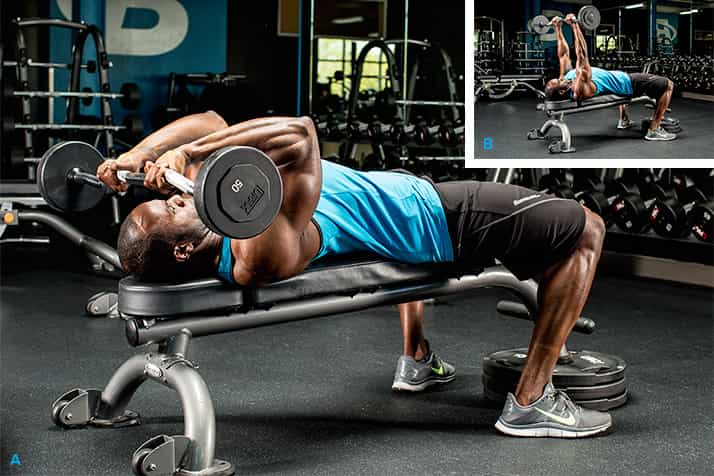
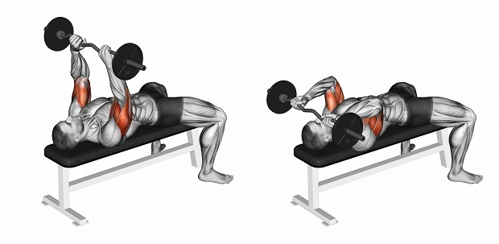
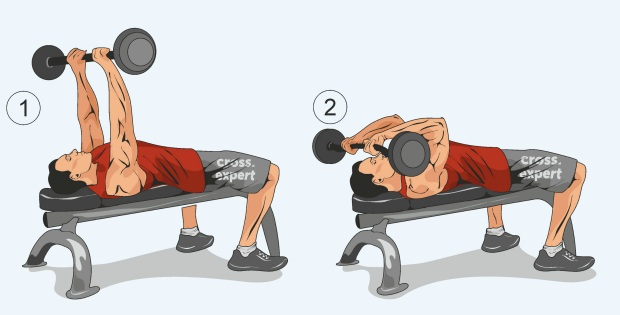

Французский жим штанги лежа
Среди всех упражнений, которые мы выполняем для развития трицепса, особенную ценность для нас представляет французский жим штанги лежа на скамье (French bench press). Это упражнение, наряду с отжиманиями на брусьях и жимом штанги лежа узким хватом, является неким фундаментом, без которого невозможно построение по-настоящему сильного и массивного трицепса.
Существует масса вариаций выполнения этого упражнения: лежа, стоя, сидя, со штангой, с гантелей, на блоке… Сегодня мы остановимся на двух самых распространенных вариантах: французский лежа со штангой на горизонтальной и наклонной скамье, так как все остальные способы не имеют принципиальной разницы с точки зрения техники, и если Вы освоили предложенный в статье вариант, то с остальными разновидностями этого упражнения каких-либо сложностей возникнуть не должно. Что ж, давайте вместе разбираться, как правильно делать французский жим лежа, какие мышцы работают при этом упражнении, типичные ошибки и альтернативы по замене.
Какие мышцы нагружает французский жим со штангой?
Французский жим лежа – упражнение, оказывающее наибольшую нагрузку на длинный пучок нашего трицепса, который, у большинства атлетов тяжелее всего откликается на силовой тренинг. Все дело в правильно заданной амплитуде движения: здесь мы можем максимально растянуть и сократить длинную головку трицепса. Для наибольшей растяжки трицепса в негативной фазе движения некоторые атлеты выполняют это упражнение со штангой или с гантелью на наклонной скамье под углом 30-45 градусов. Латеральный и медиальный пучки трицепса также получают достаточную долю нагрузки, за счет чего и происходит колоссальный скачок в развитии мышц рук.
Помимо трицепса, в работу активно включаются передние пучки дельтовидных мышц и мышцы предплечий. Мышцы кора отвечают за стабилизацию нашего организма, поэтому тоже несут небольшую статическую нагрузку.
Правильная техника выполнения французского жима
От того, насколько четко Вы будете следовать правильной технике выполнения французского жима штанги лежа, зависит не только объем и сила Ваших мышц, но и состояние суставов и связок, которые работают при выполнении движения. Французский жим – как раз одно из тех упражнений, где есть только один фактор, уделив которому должное внимание, Вы непременно добьетесь успеха – техника.
Французский жим лежа со штангой – упражнение, оказывающее наибольшую нагрузку на длинную головку нашего трицепса, которая, как правило, тяжелее всего откликается на тренинг.
Все дело в правильно заданной амплитуде движения: здесь мы можем максимально растянуть и сократить длинную головку трицепса. Для наибольшей растяжки некоторые атлеты выполняют это упражнение на наклонной скамье под углом 30-45 градусов. Латеральный и медиальный пучки трицепса также получают достаточную долю нагрузки, за счет чего и происходит колоссальный скачок в развитии мышц рук.

- Сначала расположите штангу у изголовья скамьи на удобном для Вас уровне или попросите партнера по тренировкам Вам ее подать.
- Согните руки в локтях, аккуратно обхватите гриф ладонями на симметричном от центра расстоянии и поднимите ее вверх, полностью выпрямив локти. Это – наша стартовая позиция. Ширина хвата зависит от того, с каким грифом Вы работаете, поэтому с целью разнообразить нагрузку рекомендую менять гриф от тренировки к тренировки: прямой, EZ- или W-образный, все они отлично подходят для французского жима.
- Плавно начинайте опускать гриф вниз, делая при этом плавный вдох. Существует два мнения относительно того, куда необходимо опускать снаряд: за голову или ко лбу. Я считаю, что целесообразнее опускать гриф за голову, как будто стараясь положить его обратно на скамью, так мы увеличиваем амплитуду движения и акцентируем нагрузку больше на длинной головке трицепса. Однако стоит понимать, что это не самое удобное с точки зрения биомеханики упражнение, и в нем не следует стремиться к огромным рабочим весам и пренебрегать разминкой, поверьте мне на слово, травмировать локтевые суставы и связки на французском жиме – плевое дело.
- Как только Вы опустили штангу достаточно низко и как следует растянули длинную головку трицепса, начинайте выжимать штангу вверх в исходное положение, делая мощный выдох. При этом локти должны находиться в той же позиции, что и при опускании, разводить их в стороны или сводить внутрь недопустимо, а ягодицы, верх спины и затылок следует плотно прижать к скамье. После того, как Вы вернулись в исходное положение, повторите движение.
Если Вы хотите усложнить задачу, попробуйте выполнить французский жим со штангой лежа на наклонной скамье. Обратитесь за помощью к товарищу по залу, чтобы он подал Вам штангу, самому закидывать ее не очень удобно.